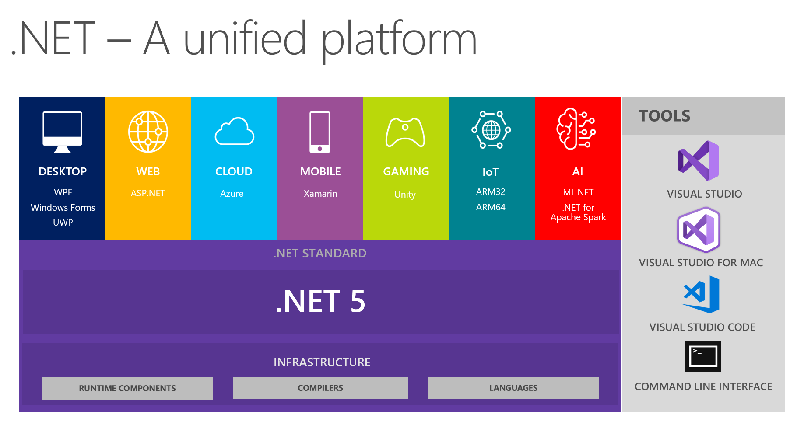

<!doctype html>
<html>
<head>
    <meta charset="utf-8">
    <meta name="viewport" content="width=device-width, initial-scale=1.0, maximum-scale=1.0, user-scalable=no">
    <link rel="stylesheet" href="reveal/css/reveal.css">
    <link rel="stylesheet" href="reveal/css/theme/kontur-light.css" id="theme">
    <!-- Theme used for syntax highlighting of code -->
    <link rel="stylesheet" href="reveal/css/highlight/idea-for-light.css">
    <link rel="stylesheet" href="reveal/css/highlight/darkula-for-dark.css">
    <!--[if lt IE 9]>
    <script src="reveal/js/html5shiv.js"></script>
    <![endif]-->
    <script defer src="reveal/js/head.min.js"></script>
    <script defer src="reveal/js/reveal.js"></script>
    <script defer src="reveal/initialize.js"></script>
    <script defer src="reveal/js/d3.min.js"></script>

    <style>
        .slides .center {
	    text-align: center;
        }
    </style>

    <title>.NET 5</title>
</head>
<body>

<div class="reveal"><div class="slides">

<section data-markdown><script type="text/template">

# .NET 5

</script></section>

<section data-markdown><script type="text/template">

## Что это?

**.NET 5** - развитие .NET Core 3,
поддерживающий миграцию с .NET Framework 4

***

## Зачем?

***

### Особенности .NET Core и .NET 5

- Кроссплатформенность и контейнеры
- Инновация и производительность без обратной совместимости
- Command Line Interface, а не только Visual Studio
- Open source
- Обновляемые кусочки с быстрой разработкой
- Не надеется на GAC - все с собой

***

### Особенности ASP.NET Core

- Linux и контейнеры!
- Производительность!
- Быстро разрабатывается!
- Лучшие практики: Web Api объединен с MVC


---


## Как это работает?

***

### Несколько сред выполнения

**.NET Framework**, **.NET Core** и **.NET 5** — независимые среды выполнения

- API похожи, но все же разные
- В .NET 5 все самое свеженькое

Код, независимый от платформ, надо выделять отдельно!
Для этого есть библиотеки **.NET Standard**


***

### .NET с разными средами выполнения

<p></p>

***

### Версионирование .NET

Язык C# развивается во всех средах выполнения.

Значит могут потребоваться новые особенности среды выполнения

Каждая версия сред выполнения .NET Frameword, .NET Core и .NET 5
поддерживает некоторую версию .NET Standard

***

**.NET Standard**
```txt
netstandard1.0, netstandard1.1, netstandard1.2,
netstandard1.3, netstandard1.4, netstandard1.5, netstandard1.6
netstandard2.0, netstandard2.1
```

**.NET Core**
```txt
netcoreapp1.x: <= netstandard1.6
netcoreapp2.x: <= netstandard2.0
netcoreapp3.x: <= netstandard2.1
```

**.NET Framework**
```txt
net45, net451, net452: <= netstandard1.2
net46, net461, net462: <= netstandard2.0
net47, net471, net472: <= netstandard2.0
net48:                 <= netstandard2.0
```

[Про версии .NET Standard](https://docs.microsoft.com/ru-ru/dotnet/standard/net-standard)
[Про семантическое версионирование](https://semver.org/lang/ru/)

***

### .NET 5

<p></p>

***

### .NET 5 вместо .NET Standard

Все же проще разрабатывать одну среду выполнения .NET 5
под несколько платформ, чем много сред разработки и общий стандарт .NET Standard для них.

.NET Standard еще будет востребован, но будущее за .NET 5

***

### Модульность by NuGet

Многое, что было встроено в .NET Framework
**поставляется отдельными NuGet-пакетами**

Большие фреймворки, например, ASP.NET Core,
состоят из многих небольших пакетов

Чтобы обновлять пакеты согласованно,
добавлено понятие **metapackage**: набор пакетов

**ASP.NET Core** — это metapackage

***

### Удобные настройки MSBuild

Теперь почти все файлы внутри папки с файлом проекта
по умолчанию добавляются в проект, причем
- `*.cs` (и файлы других языков) добавляются с компиляцией
- `*.resx` добавляются как ресурсы

Таким образом `*.*proj` нет ничего лишнего!

***

### Можно донастраивать при необходимости

Копирование файла в bin
```
<ItemGroup>
    <None Update="image.png">
      <CopyToOutputDirectory>PreserveNewest</CopyToOutputDirectory>
    </None>
</ItemGroup>
```

Можно вернуться к старому поведению
```
<PropertyGroup>
    <EnableDefaultCompileItems>false</EnableDefaultCompileItems>
    <EnableDefaultItems>false</EnableDefaultItems>
</PropertyGroup>
```

[Подробнее](https://docs.microsoft.com/ru-ru/dotnet/core/tools/csproj)


---


## Command Line Interface

***

### Команда dotnet

Создавать проекты и решения, добавлять зависимости,
строить и запускать можно через консоль!

```bash
# Узнать доступные команды
dotnet --help
# Узнать список шаблонов проектов
dotnet new --help
```

***

### Создание решения через CLI

```bash
# Создание решения с тестами на NUnit
dotnet new console -n Greeting
dotnet new sln -n Demo
dotnet sln add Greeting
dotnet new nunit -n Tests
dotnet sln add Tests
dotnet add Tests reference Greeting
dotnet restore
dotnet build

# Запуск с передачей параметров приложению
dotnet run -p Greeting -- 5 10
```

***

### Так, а где мой exe-шник?

***

### Публикация

```bash
dotnet publish -f net5.0 -r win10-x64 Greeting
```

Коды доступных [фреймворков](https://docs.microsoft.com/ru-ru/dotnet/standard/frameworks)
Коды доступных [сред выполнения](https://docs.microsoft.com/ru-ru/dotnet/core/rid-catalog)

***

### Параметры публикации в проекте

```xml
<Project Sdk="Microsoft.NET.Sdk">

<PropertyGroup>
    <OutputType>Exe</OutputType>
    <TargetFramework>net5.0</TargetFramework>
    <RuntimeIdentifiers>win10-x64;osx.10.11-x64</RuntimeIdentifiers>
</PropertyGroup>

</Project>
```

***

### Расширение с помощью tools

```bash
### Встроенные инструменты для Entity Framework
dotnet ef -h

### Установка и использование генератора кода для ASP.NET Core
dotnet tool install --global dotnet-aspnet-codegenerator
dotnet aspnet-codegenerator view List List -udl -outDir Views/User -m User
dotnet aspnet-codegenerator view Details Details -udl -outDir Views/User -m User

### Установка и использование поисковика NuGet-пакетов
dotnet tool install --global dotnet-search
dotnet search FluentAssertions
```


---


## Вопросы?


</script></section>


</div></div>
</body>
</html>
